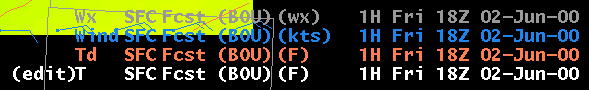

Controlling The Spatial Editor
Spatial Editor Legends
Legend Pop-Up Menu
Toggling the Legends
Map Background Options
Changing the Spatial Editor
Display Using the Legends
Toggle Grid Visibility
Toggle Grid Edit State
Changing the Spatial Editor
Display Using the Grid Manager
Making a Grid Visible and Editable
with the Grid Manager
Zooming (Enlarging) the Spatial
Display
A Shortcut for Zooming
Panning the Spatial Display
Topography
Controlling the Spatial Editor
The Spatial Editor is controlled from the Spatial
Editor
legends, Grid Manager, Time Scale or the Button Bar, depending on what
part of the display you wish to change. First we cover animation, then
discuss how to make weather elements visible and editable with Spatial
editor legends or the Grid Manager. Finally we talk about Edit Areas
before
moving on to the edit tool exercises.
Spatial Editor
Legends
The figure below is a snapshot of the Spatial Editor
legends located in the lowest portion of the display. Not only do
legends
control the Spatial Editor, but they also convey information about the
data current displayed in the Spatial Editor.

Much like the AWIPS display, the Spatial editor legends tell you which
weather elements are loaded, which are displayed (and not displayed),
which
weather element is displayed as an image and which is currently
editable.
We discuss each state below.
Not Displayed - Weather elements that are not currently visible
in the Spatial Editor are displayed in gray. If no grid occurs at the
Spatial
editor time, the legend date and time are replaced by "<No Grid>".
Displayed as a Graphic - Weather elements that are currently
displayed as a graphic (contours) are indicated by a legend whose color
matches that of the graphic.
Displayed as an Image - If a weather element is displayed as
an image in the spatial editor, its corresponding legend is white in
color.
Only one weather element may be displayed as an image at a time. When
you
display a particular weather element as an image, any element
previously
displayed as an image will be displayed as a graphic.
Editable - Any time a weather element is editable, the
characters
"(edit)" appear immediately to the left of the legend.
In addition to its color, the legend text tells you
much
about the grid(s) currently displayed in the Spatial Editor. Below we
list
an example and explain each part.
(edit) - This weather element is the editable weather element.
When edit operations are executed, the element is modified.
T - The weather element identifier. In this
example,
it refers to Temperature.
SFC Fcst - The name of the database. In this
case
it is the forecast database. Other choice may include: NAM, MRF, AVN,
GFS,
and LAPS. For D2D grids, the name may include the level as well
(e.g.,
500mb).
(BOU) - WFO over which this grid is valid.
(F) - units of this weather element. In this case degrees F.
1H - Number of hours this grid is valid. In
this
example the grid is valid for one hour.
Fri - The day of the week.
18Z 02-Jun-00 - Start time of the grid (hour
(GMT),
day of the month, month and year.
For persistent grids, i.e., grids that have no associated valid
time,
the word "Persistent" is shown in the spatial editor legend.
Although
Topography is a persistent grid, it will not contain the "Persistent"
label.
Legend Pop-up Menu
Much like the D2D display system, the GFE Spatial Editor Legends
provide
many option for controlling the display. To display the
pop-up
menu, move the cursor over any legend and press MB3. The options
available
on the legend pop-up menu include appearance items, control items, and
grid operations. Examples of the appearance items are changing the
color
table, graphic color, line width and style, setting the contour values,
density, and magnification. Examples of the control items are unloading
the weather element, displaying the weather element as an image or
graphic,
and setting the display attributes in image and graphic mode. The
grid operations are nearly identical to those options available via the
MB3 popup over the Grid Manager and include items such as deleting the
grid, fragmenting it, assigning values, and copy/paste operations.
More information is available on the legend pop-ups in the Button
3 Popups Reference Guide .
Toggling the Legends
By default, the legends display information about the
grids that are currently loaded. But the legends can be toggled off to
remove clutter from the display. To learn how to toggle the legends,
perform
the next exercise. Before you begin, select a time in the Grid Manager
so that a grid is visible in the Spatial Editor and make sure one of
the
map backgrounds is displayed.
- Move the cursor into the Spatial Editor (away from the legends)
and
press
and hold MB3.
- A pop-up menu will appear displaying a list of choices. From this
list
select Legends->Hide.
The grid data legends will disappear from the display. To display
them again select
Legends->Show All Weather Elements from
the MB3
pop-up over the Spatial Editor display.
The map background graphics may be toggled on and off as well.
By default, map background graphic legends are not displayed. You
can display them by pressing MB3 over the Spatial Editor display and
selecting
Legends->Show
Map. Note that either the Weather Element legends or the Map
Background legends may be displayed at any given time, but not both.
There are several other options available when toggling the
legends.
You can choose to just display the Fcst weather elements, or just the
active
weather element.
Map Background
Options
Once you toggle the map legends so that they are displayed you may
change
the map color or unload the map via a MB3 pop-up menu. To access
these options, move the cursor over one of the map legends and press
and
hold MB3. Options available include changing the graphic color,
line
width, style, and unloading the map background. More information
is available on the legend pop-ups in the Button
3 Popups Reference Guide .
Changing the Spatial Editor
Display using the Legends
Modifying the look of the Spatial editor display
works
very much like the AWIPS. The table below describes functions
implemented
by the legends (in the normal Grid display mode).
|
Action
|
Function
|
|
MB1 click
|
Toggle visibility
|
|
MB2 click
|
Toggle Edit state
|
Toggle Grid Visibility
Clicking MB1 on the legend will toggle a weather
element's
visibility. If it was visible before the click, it will be made
invisible.
If the weather element was invisible it will be made visible. Note that
the Spatial Editor Time must be set such that a grid's valid period
must
intersect it.
Purpose: To make a grid
visible or invisible
- Make sure that there is a weather element loaded and that the
Spatial
Editor
time is set so that it overlaps a grid.
- Click MB1 on the weather element's legend.
Toggle Grid Edit State
If you wish to edit a grid, you must first make the
grid
editable. To make the grid editable, simply click MB2 over the legend.
Anytime a weather element is editable, the letters "(edit)" appear
immediately
to the left of the legend. Note that your grid may be displayed as an
image
if the "Image on Edit" mode is enabled.
Purpose: To make a grid
editable
- As in the previous exercise, make sure that there is a weather
element
loaded and that the Spatial Editor time is set so that it overlaps a
grid.
- Make the weather element visible by clicking MB1, if it is not
already
visible.
- Click MB2 on the weather element editable.
You should see the letters "(edit)" appear to the
left
of the legend. This indicates that the weather element is now ready to
edit. Note that if the displayed grid is not editable, because is
locked
by another user or that it is a read-only model grid, the "(edit)"
string
will not appear, since the GFE will not allow you edit grids in those
states.
Changing the Spatial Editor
Display using the Grid Manager
In the Grid Manager section we discussed that fact
that
the Grid Manager tool allows you to set the time displayed in the
Spatial
Editor and make grid editable. So we briefly switch back to the Grid
Manager
to explain how it is used to control the Spatial Editor.
Making a Grid Visible and Editable
with
the Grid Manager
- Purpose: Identify a grid to edit
- Locate a grid and click MB1 over the grid block in the Grid
Manager.
Note that the grid is now visible in the Spatial
Editor
and is now in edit mode. Any Spatial Editor operation executed will be
applied to this grid. Cases where this operation will not work include
immutable weather elements such as those derived from model data and
grid
that are locked by another user of the forecast database.
Zooming (enlarging) the Spatial
Display
The Spatial Editor display can be zoomed or enlarged
at any time using the MB3 pop-up menu. When this menu is displayed, you
are given a choice of zoom factors that represent the width of the
display
in kilometers. Selecting one of these choices will cause the display to
zoom to that size centered wherever you pressed MB3.
Purpose: To make the larger
or smaller in order to see more
or less
detail.
- From the Spatial editor display, press and hold down MB3. A
pop-up menu
will appear containing the "Zoom" menu item
- Move the cursor to this "Zoom" menu item until another cascading
menu
of
numbers appears.
- Move the mouse cursor over one of the choices in the middle of
the
number
list and release MB3.
You should see the display zoom in and enlarge the
size
of the data and map backgrounds. Repeat the last exercise and select
the
highest value in the list to zoom out to full view.
A shortcut for Zooming
Another, faster way to zoom the Spatial Editor display is to press the
SHIFT key on the keyboard and click MB2 to zoom in. In AWIPS1 MB1 was used
to zoom out. In AWIPS2 for now you have to roll MB2 in to zoom out.
Zooming in always uses the clicked point as the new center of the
display. Panning has to be activated for zooming capabilities to work.
Panning the
Spatial Display
Panning the display works similarly. Rolling
MB2 in or out will pan the display in the same direction, just like.
Note that if you move the cursor outside the Spatial
Editor
display area, the pan operation stops. To continue panning, you will
need
to reposition the cursor, and roll MB2 again.
Topography
The GFE includes topography as a special weather
element.
Topography can be displayed with any other weather element, except that
it cannot be edited. To load topography into the GFE, perform the
exercise
below.
Purpose: To load and display topography data
- From the main menu, select Maps ->Topography.
You should now see an image that represents the
topography
over your county warning area. The image is generated from a terrain
database
and mapped to your office's projection and domain. While you cannot
edit
topography data, it can be used to identify edit areas based on
elevation.
We will discuss more about defining edit areas based on gridded values
in the next section.